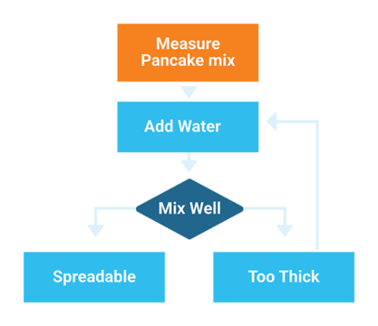

Algorithmic thinking is a method of solving problems by developing a precise, step-by-step approach. It's a fundamental skill in computer science and mathematics, enabling us to create efficient solutions to complex problems.

What is an Algorithm?
An algorithm is a finite sequence of well-defined, computer-implementable instructions to solve a specific problem or perform a computation. Algorithms are:
Clear and unambiguous: Each step has a precise meaning.
Finite: The algorithm must eventually terminate.
Effective: Each step must be executable and lead toward a solution.
Input-defined: The algorithm accepts zero or more inputs.
Output-producing: The algorithm produces one or more outputs.
Expressing Algorithms
1. Pseudocode
Pseudocode is a high-level description of an algorithm that uses structural conventions of programming languages but is designed to be read by humans rather than machines. It doesn't adhere to strict syntax rules.
ALGORITHM FindMax(numbers)
IF length of numbers = 0 THEN
RETURN "List is empty"
END IF
max = numbers[0]
FOR i = 1 TO length of numbers - 1 DO
IF numbers[i] > max THEN
max = numbers[i]
END IF
END FOR
RETURN max
END ALGORITHM
2. Flowcharts
Flowcharts are graphical representations of algorithms, showing the steps as boxes and their order by connecting them with arrows. They help visualize the flow of control in an algorithm.
Problem-Solving Strategies
Developing algorithmic solutions requires structured approaches to problem-solving. Here are some key strategies:
1. Understand the Problem
Clearly define what inputs are given and what outputs are expected
Identify constraints and special cases
Work through examples manually to gain insights
2. Divide and Conquer
Break complex problems into smaller, more manageable subproblems. Solve each subproblem independently, then combine the solutions.
// Example: Merge Sort algorithm uses divide and conquer
ALGORITHM MergeSort(array)
IF length of array <= 1 THEN
RETURN array // Base case: already sorted
END IF
// Divide phase
mid = length of array / 2
left = MergeSort(array[0...mid-1])
right = MergeSort(array[mid...end])
// Conquer phase: merge sorted halves
RETURN Merge(left, right)
END ALGORITHM
3. Greedy Strategy
Make the locally optimal choice at each step with the hope of finding a global optimum. Greedy algorithms work well for certain problems but not all.
Example: Making Change
To make change with the fewest coins, always choose the largest denomination that doesn't exceed the remaining amount.
ALGORITHM MakeChange(amount, denominations)
result = []
FOR EACH coin in denominations (sorted largest to smallest) DO
WHILE amount >= coin DO
Add coin to result
amount = amount - coin
END WHILE
END FOR
RETURN result
END ALGORITHM
4. Dynamic Programming
Solve complex problems by breaking them down into simpler subproblems, solving each subproblem once, and storing the solutions to avoid redundant computation.
Example: Fibonacci Sequence
Instead of recursive calls that duplicate work, store previously calculated values:
ALGORITHM Fibonacci(n)
IF n ≤ 1 THEN
RETURN n
END IF
// Create array to store calculated values
fib = new array of size n+1
fib[0] = 0
fib[1] = 1
FOR i = 2 TO n DO
fib[i] = fib[i-1] + fib[i-2]
END FOR
RETURN fib[n]
END ALGORITHM
Algorithm Analysis and Complexity
Understanding how an algorithm performs is crucial for choosing the right solution to a problem. Algorithm analysis involves measuring the efficiency of an algorithm in terms of time and space requirements.
Time Complexity
Time complexity measures how the runtime of an algorithm grows as the input size increases. We use Big O notation to express this growth rate.
Common Time Complexities:
Notation
Name
Example
Efficiency
O(1)
Constant
Array access, hash table lookup
Excellent
O(log n)
Logarithmic
Binary search, balanced tree operations
Very good
O(n)
Linear
Linear search, array traversal
Good
O(n log n)
Linearithmic
Merge sort, quick sort (average case)
Fair
O(n²)
Quadratic
Bubble sort, insertion sort
Poor for large inputs
O(2ⁿ)
Exponential
Recursive Fibonacci, Tower of Hanoi
Very poor
Space Complexity
Space complexity measures how much memory an algorithm needs as the input size increases. Like time complexity, it's expressed in Big O notation.
For example, an algorithm that creates a new array of size n has a space complexity of O(n), while one that only uses a fixed number of variables has O(1) space complexity.
Practical Considerations
When analyzing algorithms, consider:
Average vs. Worst Case: Some algorithms perform well on average but poorly in worst cases.
Input Characteristics: Some algorithms work better with certain data distributions.
Tradeoffs: Faster algorithms often require more memory, and vice versa.
Constants Matter: While Big O notation ignores constants, in practice they can be significant for small inputs.
Optimizing Algorithms
Common techniques for improving algorithm efficiency include: